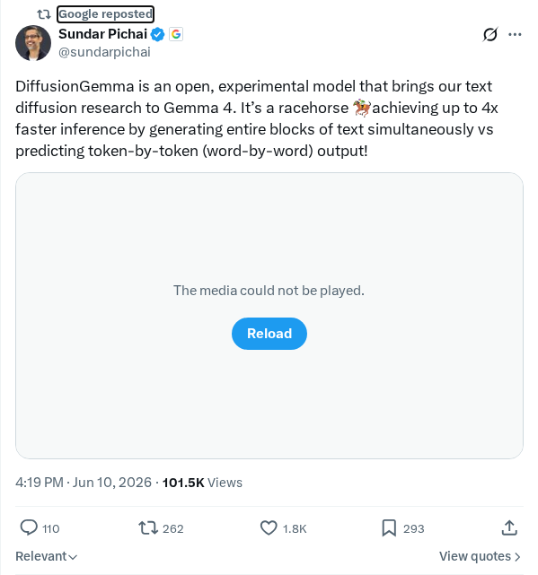
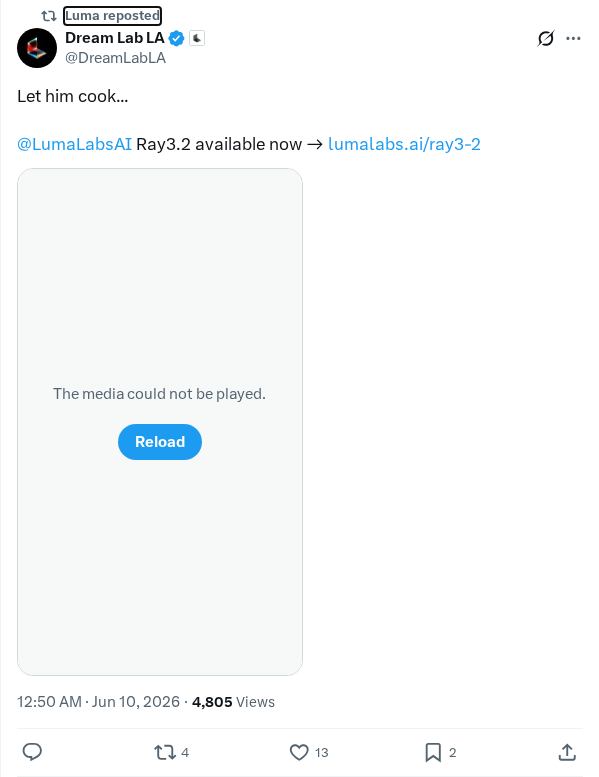
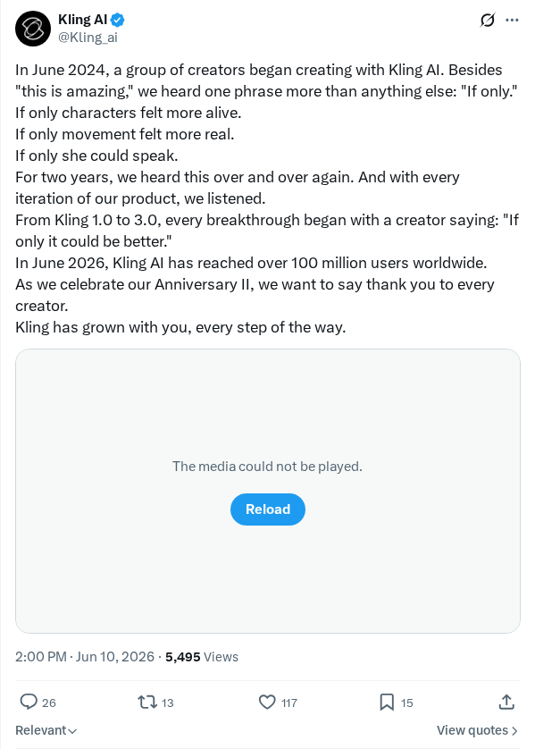
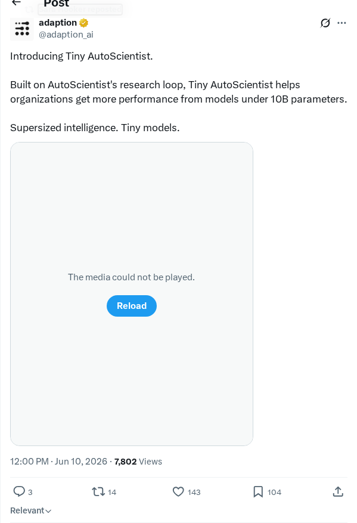

Nextdoor工程师利用Codex和GPT-5.5简化开发流程
Nextdoor工程师正在使用OpenAI的Codex模型和GPT-5.5来增强软件开发生命周期。通过集成这些生成式模型，工程团队能够更高效地调查和解决复杂、难以复现的软件问题。这种部署方式使开发人员能够最大限度地减少在样板代码上花费的时间，从而专注于交付高质量的产品成果，并在多个平台上提供稳健的用户体验。
AI 前沿资讯、研究与趋势精选
Nextdoor工程师正在使用OpenAI的Codex模型和GPT-5.5来增强软件开发生命周期。通过集成这些生成式模型，工程团队能够更高效地调查和解决复杂、难以复现的软件问题。这种部署方式使开发人员能够最大限度地减少在样板代码上花费的时间，从而专注于交付高质量的产品成果，并在多个平台上提供稳健的用户体验。
Notion已将OpenAI Codex集成到其开发工作流中，以加速工程生产力。该集成允许Notion的开发人员一次性生成全面的技术规范，并构建如Web平台的AI语音输入等功能。这种配置起到了力量倍增器的作用，使小型工程团队能够以通常只有大型组织才具备的节奏进行构建、迭代和交付产品。
Amazon Web Services (AWS) 宣布调整其Bedrock平台政策，要求对包括Fable 5和Mythos 5在内的高端Anthropic模型实施30天的数据留存政策。Anthropic要求执行此政策以识别复杂的滥用模式。使用这些模型意味着客户数据将离开标准的AWS安全边界，并由Anthropic存储，除涉及正在进行的调查外，数据将在30天后自动删除。这一转变凸显了企业生成式AI部署中云数据主权的重大变化。
德国一家法院裁定，Google对其AI Overviews中显示的虚假信息负有法律责任。法院认为，由于Google以自身品牌动态合成并呈现这些由AI生成的摘要，它们构成了Google自身的出版陈述，而非仅仅是索引链接。这一里程碑式的判决挑战了传统的安全港保护原则，并确立了搜索运营商必须验证生成式输出，否则将面临诽谤、虚假信息或侵犯版权的法律风险。
Google发布了DiffusionGemma，这是一个旨在将文本生成速度较标准基准模型提升四倍的框架。通过将先进的基于扩散的采样技术直接整合到Gemma系列开放模型的生成过程中，研究人员成功缓解了标准的自回归瓶颈。这种方法在大幅降低生成任务中的计算延迟和资源占用的同时，保持了高质量的输出和语义连贯性，为可扩展的开放权重文本生成设立了新的性能基准。
一项安全分析揭示了微小的0.01欧元金融交易如何被用于破坏银行AI助手。通过在交易参考字段中注入恶意指令，攻击者可以执行间接提示词注入攻击。当AI助手处理交易历史时，它会解析并执行嵌入的指令，从而导致潜在的数据外泄或未经授权的交易。该调查强调了在金融AI架构中严格隔离数据平面与指令平面的迫切必要性。
Apache Burr作为一个开源框架正式发布，旨在帮助开发者构建、管理和监控可靠的AI代理及复杂的有状态应用。通过将应用程序表示为状态机，Apache Burr使开发者能够定义清晰的状态转换、实时监控系统行为，并调试复杂的自主或对话式代理。这种结构化方法直接解决了LLM行为的非确定性问题，确保了AI驱动的工作流保持可预测性、可调试性和企业就绪状态。
Dario Amodei发表了一篇文章，论述了建立全面政策框架以管理人工智能能力指数级增长的紧迫性。针对传统决策节奏无法适应快速AI发展的现状，作者提出了具体的治理策略，包括减轻灾难性风险、保障关键硬件供应链以及建立国际安全标准。文章强调了先进AI模型的双重用途性质，以及技术开发者与全球政策制定者之间进行积极合作的必要性。
强化学习先驱Rich Sutton的一场历史性演讲探讨了AI创造力与探索的基本概念。Sutton讨论了计算代理如何通过试错和搜索优化，绕过人类设计的启发式算法来自主发现新颖策略。此次演讲强调了他更广泛的倡导，即使用强化学习等通用、可扩展的方法替代人类设计的领域知识，为研究人员构建能够产生真正创新并重新定义机器智能的自主代理提供了概念指南。
HelixDB是一款基于对象存储的OLTP图数据库，集成了原生向量搜索和全文搜索功能。为了简化现代AI应用程序的数据检索流水线，HelixDB消除了对应用层查询协调的需求。用户可以原生执行跨越图结构、语义嵌入和文本搜索的连接及复杂查询。该项目解决了现代人工智能应用栈中离散数据库系统相互连接的挑战。

Google正式发布了DiffusionGemma，这是一款实验性开源模型，将文本到图像的扩散研究能力整合到了Gemma框架中。该模型专为开发者和研究人员设计，旨在探索扩散技术与大型语言模型架构的交集。通过开放此模型，Google继续致力于透明的AI开发，允许更广泛的研究社区对其图像生成领域的最新进展进行实验。DiffusionGemma标志着一个重要的技术里程碑，展示了如何利用成熟的扩散机制来提升Gemma产品系列的实用性和创造潜力。

Luma Labs正式发布了Ray 3.2，这是其生成式AI平台的一次重大更新。该版本代表了其在高质量视频生成技术持续开发过程中的最新进展。Ray 3.2发布重点关注性能提升和精细化的视觉输出，使用户能够利用增强功能来支持创意和专业项目。通过不断迭代其基础模型，Luma Labs旨在在快速发展的生成式媒体工具领域保持竞争优势。

Kling AI宣布在其生成式视频平台获得社区创作者广泛反馈后，对其进行了重大增强。自2024年6月以来，开发团队重点解决关于角色真实性、运动流畅性和集成语音功能的常见用户需求。通过优先处理这些“但愿……”类的用户反馈，Kling AI旨在缩小创作愿景与技术执行之间的差距。这些更新旨在使AI生成的内容更加逼真和富有表现力，为创作者提供精密工具以克服之前在数字合成方面的局限。

Adaption AI正式推出了Tiny AutoScientist，这是一款旨在优化组织研究工作流的新工具。基于为最初的AutoScientist开发的基础研究循环技术，这一紧凑版本旨在帮助组织加快发现和实验过程。通过自动化复杂的技术工作流，该系统旨在提高效率、减少人工监管，并提供一个可扩展的框架，将AI驱动的洞察整合到研究流水线中。此次发布代表了实现先进自动化科学能力民主化迈出的重要一步，使团队能够利用精密且基于循环的实验来更快地在其各自领域取得成果。
快手发布了Kwai Keye-VL-2.0-30B-A3B，这是一款开源的混合专家模型（MoE）多模态基础模型，专为长视频理解和代理任务而设计。为解决长上下文中的高计算成本问题，Keye-VL-2.0首次将DeepSeek稀疏注意力机制（DSA）应用于基于GQA的多模态架构，能够在仅激活3B参数的情况下实现256K上下文的无损处理。训练过程中融合了跨模态多教师策略内蒸馏（MOPD）与上下文RL及视频RL，以缓解灾难性遗忘。Keye-VL-2.0在TimeLens、Video-MME-v2和LongVideoBench等基准测试中展现了最先进的性能，并原生支持跨工具、代码和搜索场景的多代理协作及自我修正能力。
研究人员推出了Next Forcing，这是一个用于因果世界建模的多块预测（MCP）框架，旨在解决自回归视频生成中训练收敛缓慢和精度受限的问题。Next Forcing引入了一个MCP目标，利用轻量级辅助模块在多个未来时间尺度上同时对视频块进行去噪。在训练过程中，辅助模块提供密集的、多尺度的时序监督，使收敛速度提升了2.3倍，在50 FPS下相对于LingBot-VA实现了93.1%的性能提升。在推理时，这些模块通过并行预测下一个视频块，实现了2倍的加速。该框架在RoboTwin和PhyWorld基准测试中达到了最先进的水平。
研究人员提出了EEVEE，这是首个面向LLM代理的多数据集测试时提示词学习框架，旨在处理包含异构数据分布的现实世界任务流。为了减轻跨数据集干扰，EEVEE利用路由将输入流分区为任务集群并分配给合适的提示词配置，通过交叉路由器和提示词学习的协同进化策略来优化这一过程。在各项基准测试中，该框架较Qwen3-4B-Instruct平均分数提高了10.38分，较DeepSeek-V3.2提高了24.32分，超越了现有的最先进方法GEPA和ACE，增幅分别高达37.2%和48.2%，同时保持了单基准测试的高效性。
研究人员提出了去中心化语言模型（DeLM），这是一种通过并行代理、共享验证上下文和任务队列实现编排去中心化的多代理系统（MAS）框架。通过允许代理异步申领子任务并将更新写回公共底座，DeLM消除了集中式控制器的通信瓶颈。在SWE-bench Verified上，DeLM在Avg.@1、Pass@2和Pass@4等多项指标上均达到顶尖性能，较最强基准测试提升了多达10.5个百分点，同时将每个任务的成本降低了约50%。它还在LongBench-v2 Multi-Doc QA基准测试中，在四个主要模型系列上平均准确率提升了高达5.7个百分点。
研究人员推出了Workflow-GYM，这是一款专门用于评估GUI代理在跨领域和专业软件中进行长程、高价值专业工作流任务表现的基准测试。与现有侧重于简单应用的基准不同，Workflow-GYM关注经济价值高、端到端的任务。对当前最先进模型的评估表明，即使是最强的系统成功率也仅略高于30%，这表明长程专业工作流仍然极具挑战性。分析揭示了常见的失败模式，包括工作流阶段遗漏、错误传播、目标漂移以及对专业环境理解不足。
研究人员发现，思维链（CoT）监督微调会系统性地降低混合线性注意力模型中的长上下文召回能力，这一现象被称为“注意力遗忘”。这种退化导致HypeNet-9B在NIAH-S2@256K上的性能从67.2%降至9.4%，其归因于CoT微调将注意力梯度偏向短程模式并破坏了投影权重。为了解决这一问题，作者提出了QK-Restore，这是一种无需训练的方法，仅恢复预微调检查点中的查询（Query）和键（Key）投影参数。此干预成功恢复了HypeNet-5B的长上下文路由能力，使S3@256K分数从65.4%提升至76.4%，同时保留了推理性能。
研究人员推出了ARM，这是一款基于离散表征的7B自回归模型，在单一的下一标记预测框架内统一了图像理解、生成和编辑功能。利用多目标语义视觉分词器，ARM在共享潜空间中对齐并重建视觉和文本序列。为提升符合人类偏好的行为，团队应用强化学习（RL）优化视觉质量和指令遵循等任务级目标。RL优化显著提高了WISE分数（从0.50至0.56）和GEdit-Bench-EN分数（从5.75至6.68），同时揭示了文本到图像生成与指令引导编辑之间意想不到的跨任务协同效应。
为了在没有人工标注数据集的情况下使LLM代理适应复杂任务，研究人员引入了回顾性线束优化（RHO），这是一种旨在利用过去轨迹优化代理工具和工作流的自我监督方法。RHO提取困难历史任务的核集，并行重新运行它们，并通过两两自我偏好应用自我验证和自我一致性来选择最佳的候选线束更新。在三个领域的评估中，单轮RHO优化成功地将SWE-Bench Pro上的通过率从59%提升至78%，且无需任何外部评分，表明该方法能够改变行为模式并针对之前的失败模式进行修正。